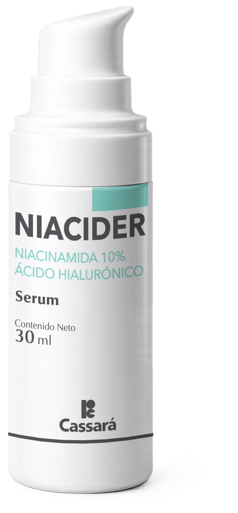
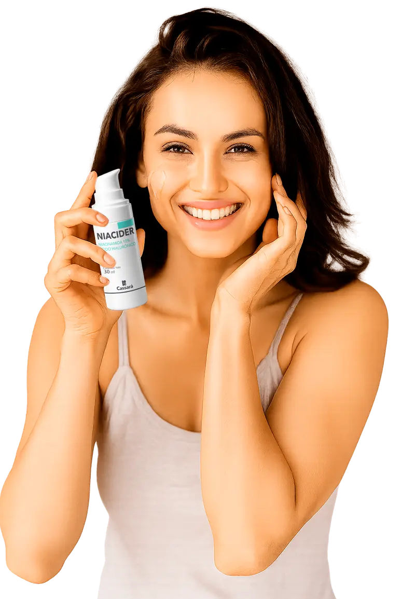
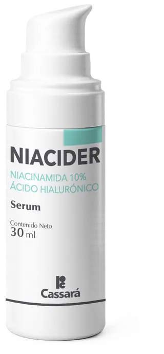
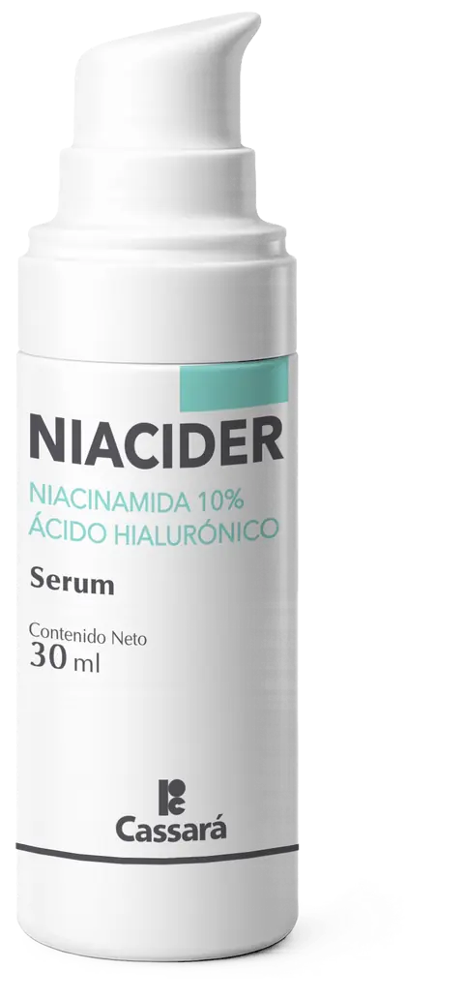

Nuevo lanzamiento
NIACIDER serum Niacinamida 10% + Ácido Hialurónico

El serum ideal para la rutina diaria: fortalece la barrera cutánea, hidrata en profundidad y protege frente al estrés oxidativo.
- Dermatológicamente testeado
- Hipoalergénico
- Libre de fragancia y parabenos
- No testeado en animales
Beneficios
Desarrollado con experiencia. Inspirado en la piel
Activos de última generación que actúan en sinergia para transformar el cuidado diario en un tratamiento de alta eficacia.
-
Barrera cutánea más fuerte
La Niacinamida estimula la síntesis de ceramidas y lípidos intercelulares, reforzando la integridad de la epidermis para una piel más fuerte y resistente.
-
Hidratación profunda y duradera
El Ácido Hialurónico HySilk® de bajo peso molecular penetra en las capas profundas, y la Glicerina atrae agua hacia el estrato córneo para mantener la piel hidratada.
-
Protección antioxidante
Niacinamida y Vitamina E neutralizan los radicales libres (contaminación, radiación UV, estrés), ayudando a prevenir el envejecimiento prematuro.
El producto
El serum ideal para la rutina diaria
- Textura liviana y de rápida absorción.
- Acabado aterciopelado no graso.
- Hidrata, suaviza y mejora la elasticidad.
- Refuerza la barrera cutánea, retrasando los signos de envejecimiento.
- Reduce micropliegues y ayuda a prevenir hiperpigmentaciones.
- Apto para todo tipo de pieles, incluidas las sensibles.
La fórmula
Cuatro activos, una sinergia
Elegí un activo para conocer cómo actúa en tu piel.
Vitamina B3
Niacinamida 10%
- Estimula la síntesis de ceramidas y lípidos intercelulares: piel más fuerte y resistente.
- Favorece la diferenciación de queratinocitos, reforzando la integridad estructural de la epidermis.
- Potente acción antioxidante: neutraliza radicales libres (contaminación, radiación UV, estrés).
- Mejora la textura, tono y luminosidad de la piel, reduciendo líneas de expresión y arrugas.
Bajo peso molecular · 150–1300 kDa
Ácido Hialurónico HySilk®
- De bajo peso molecular: penetra profundamente.
- Aporta hidratación intensa y duradera.
- Mejora la elasticidad cutánea.
- Refuerza la barrera y reduce la pérdida transepidérmica de agua (TEWL).
Antioxidante natural
Vitamina E
- Potente antioxidante natural.
- Protege frente al daño oxidativo y la radiación UV.
- Potencia la acción de la Niacinamida y el Ácido Hialurónico.
Humectante
Glicerina
- Atrae agua desde el ambiente y las capas profundas de la piel hacia el estrato córneo, manteniendo la piel hidratada.
- Suaviza la piel y mejora su elasticidad.
- Refuerza la barrera cutánea reduciendo la pérdida transepidérmica de agua (TEWL).
Innovación
Innovación y ciencia aplicada
NIACIDER Serum combina biotecnología y experiencia dermatológica. Sus activos actúan en sinergia para:
- Fortalecer la barrera cutánea.
- Mejorar la hidratación profunda.
- Proteger frente al estrés oxidativo y el envejecimiento prematuro.
La Niacinamida y el Ácido Hialurónico actúan en conjunto para hidratar en profundidad, suavizar líneas de expresión y arrugas, y mejorar la elasticidad cutánea. Su acción sinérgica reduce micropliegues y ayuda a prevenir alteraciones pigmentarias, dejando la piel más uniforme y luminosa.

Modo de uso
Mañana y noche

-
Por la mañana
Aplicá NIACIDER Serum y completá con FOTOSOL PLANO para asegurar una protección completa durante el día.
-
Por la noche
Volvé a aplicar NIACIDER Serum. Se recomienda una aplicación por la mañana y otra por la noche.
Indicado para todo tipo de pieles
- Secas
- Normales
- Mixtas
- Grasas
- Sensibles
Preguntas frecuentes
Todo lo que querés saber
Sumalo a tu rutina diaria
Consultá por NIACIDER Serum en tu farmacia de confianza.
Conocé más en Cassará (sitio externo)